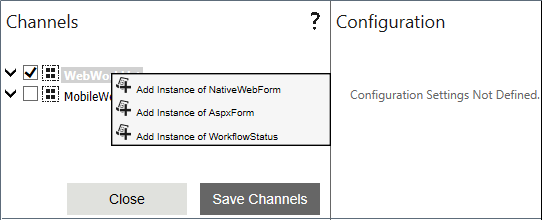
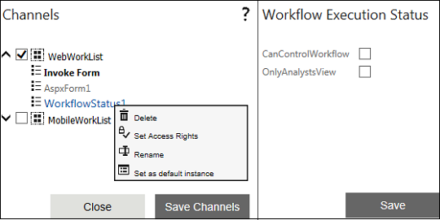

No
Purpose
The purpose of this chapter is to describe the feature of WorkflowStatus Form of Delivery Channels property under the category Configuration of any human activity available in AVEVA Work Tasks.
Description: This feature enables us to view the status of the workflow in the work item list in the graphical form. [Optional]


Output:
Now, when you click on any row in the Work items list, you will find this Execution view page being displayed as the detailed view if you set it as a default instance.
Otherwise workflow status form will appear in context menu of each row in Work items list and you can open the execution view by selecting it from the context menu.